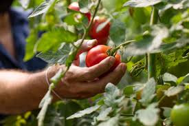

Tomato Farming Images and Information

Tomato Field
Tomatoes thrive in warm, sunny climates and are one of India’s most popular crops.
Learn More
Tomato Harvesting
Ripe red tomatoes are carefully harvested and transported to markets across India.
Learn More
Tomato Products
Tomatoes are used to make sauces, ketchup, and many other delicious products.
Learn More